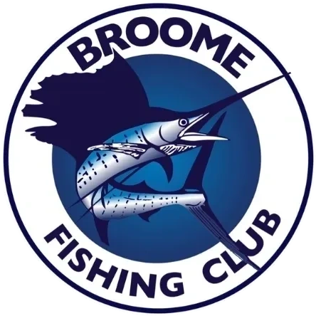
Kimberley17°58′S 122°14′E
Broome Fishing Club
Broome
Game and sport fishing in the warm tropical waters of the Kimberley.
- broomefishingclub.com
- PO Box 1957, Broome WA 6725

Member clubs
12 member clubs from Broome to Busselton. Joining one is how you fish sanctioned tournaments and claim State and Australian records.
Directory
Showing all 12 clubs

Broome
Game and sport fishing in the warm tropical waters of the Kimberley.
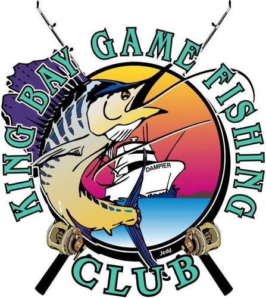
Dampier / Karratha
Home of the Dampier Classic, the four-day Pilbara tournament that recently celebrated its 50th edition.
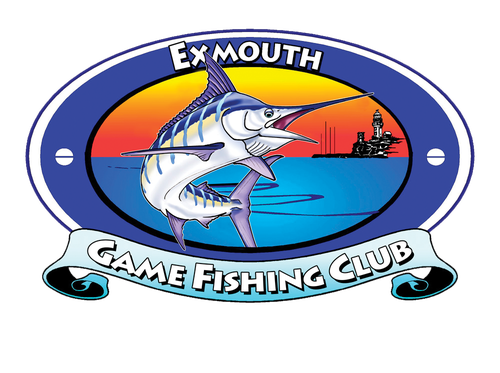
Exmouth
Runs Gamex, recognised by Tourism Western Australia as the State's major fishing tournament, on the edge of Ningaloo.
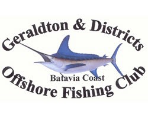
Geraldton
Offshore fishing out of Geraldton on the Mid West coast.
Jurien Bay
Anglers on the Turquoise Coast, host waters of the Jurien Bay WA Open.
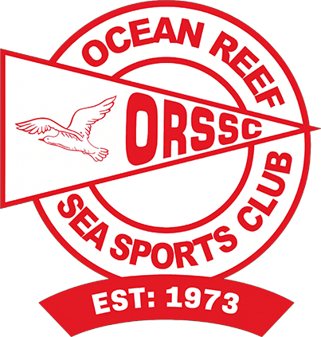
Ocean Reef
A community sea sports club at Ocean Reef Marina, established in 1973. Its angling section runs monthly boat and beach competitions, and its members fish WAGFA-sanctioned events from the 2026/27 season.
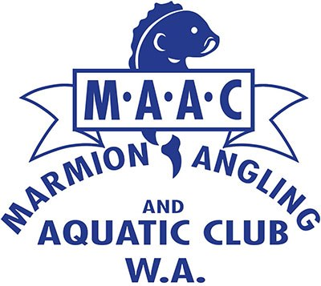
Marmion
A northern-suburbs club fishing Perth's metropolitan coast.
Perth
Formed in 1949 as the original WAGFA. Runs the Marlin Cup, the Jurien Bay WA Open and the metropolitan FAD program.
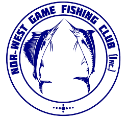
Perth
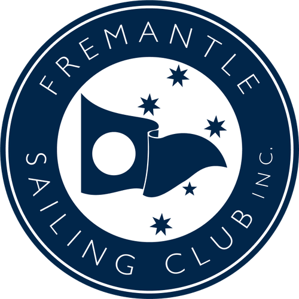
Fremantle
The game fishing section of the Fremantle Sailing Club.
Coogee
Boating and fishing out of Jervoise Bay and Cockburn Sound.
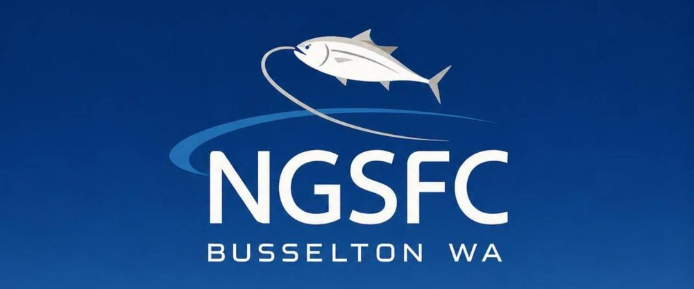
Busselton
Game and sport fishing off Geographe Bay and Cape Naturaliste.
Clubs are listed from north to south. Contact details are supplied by each club; if something is out of date, let us know.
From the Kimberley to the Capes
WAGFA clubs fish waters ranging from tropical Broome and the Pilbara, through Ningaloo and the Abrolhos, to the Perth Canyon and Geographe Bay.
See club tournamentsWhy join a club?
Membership of an affiliated club is what connects you to WAGFA, to the Game Fishing Association of Australia and to everything that comes with them.
Only financial or life members of a GFAA-affiliated club can claim State and Australian records.
Compete in your club's events and in sanctioned tournaments run by other WAGFA clubs around the State.
Club members can take part in the national Gamefish Tagging Program and help researchers track game fish.
Pick up technique, local knowledge and where to find fish from experienced anglers, at club nights and on the water.
Ask your club about fishing with like-minded members. Perth Game Fishing Club, for one, offers members without a boat the chance to crew.
Club competitions, annual awards and social events, plus a voice through WAGFA and the GFAA.
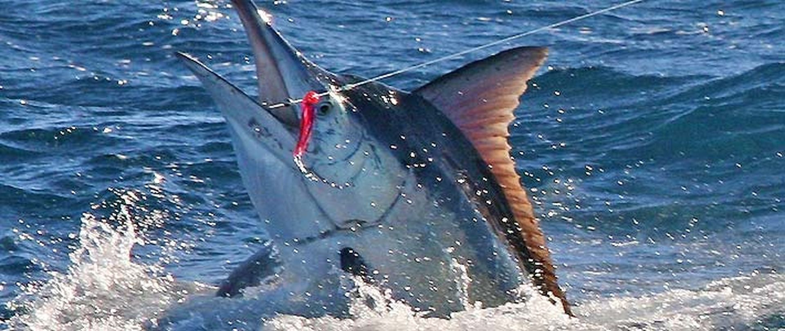
Juniors & Small Fry
Young anglers have their own record categories. Juniors are anglers who have not turned 16, and Small Fry are anglers who have not turned 11.
The GFAA National Junior Tournament runs from 1 July to 30 June each year and is open to all anglers under 16. Entry is free and done online, and captured, tagged and measured fish all score points.
Game fishing clubs in Western Australia can affiliate with WAGFA, and through us with the Game Fishing Association of Australia. Contact the Secretary to find out how.
Acknowledgement of Country. The Western Australian Game Fishing Association acknowledges the Traditional Custodians of the lands and waters throughout Western Australia and their continuing connection to land, sea and community. We pay our respects to Elders past and present.